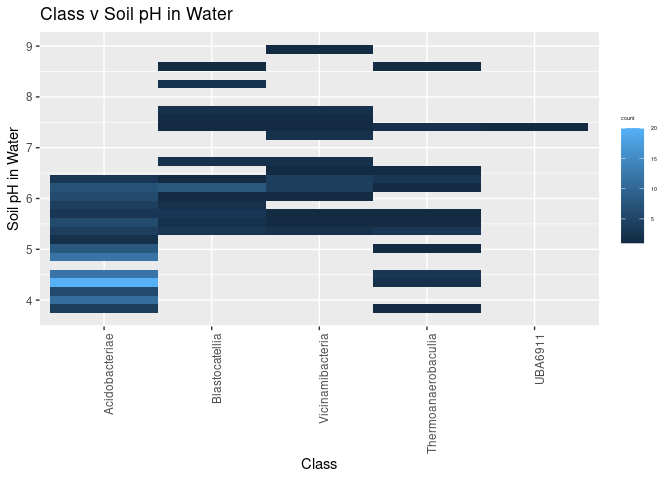

── Attaching core tidyverse packages ──────────────────────── tidyverse 2.0.0 ──
✔ dplyr 1.1.4 ✔ readr 2.1.5
✔ forcats 1.0.0 ✔ stringr 1.5.1
✔ ggplot2 3.5.1 ✔ tibble 3.2.1
✔ lubridate 1.9.3 ✔ tidyr 1.3.1
✔ purrr 1.0.2
── Conflicts ────────────────────────────────────────── tidyverse_conflicts() ──
✖ dplyr::filter() masks stats::filter()
✖ dplyr::lag() masks stats::lag()
ℹ Use the conflicted package (<http://conflicted.r-lib.org/>) to force all conflicts to become errors
Attaching package: 'plotly'
The following object is masked from 'package:ggplot2':
last_plot
The following object is masked from 'package:stats':
filter
The following object is masked from 'package:graphics':
layout
Attaching package: 'zoo'
The following objects are masked from 'package:base':
as.Date, as.Date.numeric
Rows: 1754 Columns: 19
── Column specification ────────────────────────────────────────────────────────
Delimiter: ","
chr (8): Bin ID, Genome Name, Bin Quality, Bin Lineage, GTDB-Tk Taxonomy L...
dbl (10): IMG Genome ID, Bin Completeness, Bin Contamination, Total Number ...
date (1): Date Added
ℹ Use `spec()` to retrieve the full column specification for this data.
ℹ Specify the column types or set `show_col_types = FALSE` to quiet this message.
NEON_MAGs_Ind_tax_sample <- NEON_MAGs_Ind_tax %>%# Get rid of the the common string "Soil microbial communities from " mutate_at("Site", str_replace, "Terrestrial soil microbial communities from ", "") %>%# Use the first `-` to split the column in two separate(`Site`, c("Site","Sample Name"), " - ") %>%# Get rid of the the common string "S-comp-1" mutate_at("Sample Name", str_replace, "-comp-1", "") %>%# separate the Sample Name into Site ID and plot info separate(`Sample Name`, c("Site ID","subplot.layer.date"), "_", remove = FALSE,) %>%# separate the plot info into 3 columns separate(`subplot.layer.date`, c("Subplot", "Layer", "Date"), "-")
NEON_MAGs_bact_ind %>% ggplot(aes(x = fct_rev(fct_infreq(Subplot)), fill = Site)) + geom_bar() + coord_flip() + theme(axis.text.x = element_text(angle=45, vjust=1, hjust=1), axis.text.y = element_text(size =5)) + labs(title ="MAG Counts for Each Subplot", x ="Subplot", y ="Count") + theme_classic()
In [19]:
NEON_MAGs_bact_ind %>%ggplot(aes(x = fct_rev(fct_infreq(Site)), fill = Phylum)) + geom_bar() + coord_flip() + theme(axis.text.x = element_text(size=10), axis.text.y = element_text(size=5)) + labs(title ="MAGs Found at Each Site (By Phylum)", x ="Site", y ="Count")
In [20]:
NEON_MAGs_bact_ind %>%filter(is.na(Genus)) %>% ggplot(aes(x =fct_infreq(Phylum))) + geom_bar() + coord_flip() + theme(axis.text.x = element_text(angle=45, vjust=1, hjust=1), axis.text.y = element_text(size =5)) + labs(title ="Phyla with Novel Genera", x ="Phylum", y ="Count of Novel Bacteria") + theme_classic()
Rows: 176 Columns: 46
── Column specification ────────────────────────────────────────────────────────
Delimiter: "\t"
chr (18): Domain, Sequencing Status, Study Name, Genome Name / Sample Name, ...
dbl (16): taxon_oid, IMG Genome ID, Depth In Meters, Elevation In Meters, Ge...
lgl (12): Altitude In Meters, Chlorophyll Concentration, Longhurst Code, Lon...
ℹ Use `spec()` to retrieve the full column specification for this data.
ℹ Specify the column types or set `show_col_types = FALSE` to quiet this message.
In [27]:
NEON_metagenomes <- NEON_metagenomes %>%# Get rid of the the common string "Soil microbial communities from " mutate_at("Genome Name", str_replace, "Terrestrial soil microbial communities from ", "") %>%# Use the first `-` to split the column in two separate(`Genome Name`, c("Site","Sample Name"), " - ") %>%# Get rid of the the common string "-comp-1" mutate_at("Sample Name", str_replace, "-comp-1", "") %>%# separate the Sample Name into Site ID and plot info separate(`Sample Name`, c("Site ID","subplot.layer.date"), "_", remove = FALSE,) %>%# separate the plot info into 3 columns separate(`subplot.layer.date`, c("Subplot", "Layer", "Date"), "-")
Warning: Expected 2 pieces. Missing pieces filled with `NA` in 1 rows [53].
Rows: 87 Columns: 17
── Column specification ────────────────────────────────────────────────────────
Delimiter: "\t"
chr (5): genomicsSampleID, siteID, plotID, nlcdClass, horizon
dbl (11): decimalLatitude, decimalLongitude, elevation, soilTemp, d15N, org...
date (1): collectionDate
ℹ Use `spec()` to retrieve the full column specification for this data.
ℹ Specify the column types or set `show_col_types = FALSE` to quiet this message.
In [29]:
NEON_MAGs %>% left_join(NEON_metagenomes, by ="Site ID") %>% left_join(NEON_chemistry, by = c("Site ID"="siteID")) %>%filter(Phylum =="Acidobacteriota") %>% ggplot(aes(x = fct_infreq(`Site ID`), y = `soilTemp`)) + geom_boxplot() + theme(axis.text.x = element_text(angle=45, vjust=1, hjust=1)) + labs(title ="Soil Temp by Site", x ="Site ID", y ="Soil Temp")
Warning in left_join(., NEON_metagenomes, by = "Site ID"): Detected an unexpected many-to-many relationship between `x` and `y`.
ℹ Row 1 of `x` matches multiple rows in `y`.
ℹ Row 12 of `y` matches multiple rows in `x`.
ℹ If a many-to-many relationship is expected, set `relationship =
"many-to-many"` to silence this warning.Warning in left_join(., NEON_chemistry, by = c(`Site ID` = "siteID")): Detected an unexpected many-to-many relationship between `x` and `y`.
ℹ Row 1 of `x` matches multiple rows in `y`.
ℹ Row 1 of `y` matches multiple rows in `x`.
ℹ If a many-to-many relationship is expected, set `relationship =
"many-to-many"` to silence this warning.Warning: Removed 188 rows containing non-finite outside the scale range
(`stat_boxplot()`).
In [30]:
NEON_MAGs %>% left_join(NEON_metagenomes, by ="Sample Name") %>% left_join(NEON_chemistry, by = c("Sample Name"="genomicsSampleID")) %>%filter(Phylum =="Acidobacteriota") %>% ggplot(aes(x = fct_infreq(`Ecosystem Subtype`), y = soilTemp)) + geom_point(aes(color=Class)) + theme(axis.text.x = element_text(angle=45, vjust=1, hjust=1)) + labs(title ="Soil Temp by Ecosystem Subtype", x ="Ecosystem Subtype", y ="Soil Temp")
Warning: Removed 125 rows containing missing values or values outside the scale range
(`geom_point()`).
In [31]:
NEON_MAGs %>% left_join(NEON_metagenomes, by ="Sample Name") %>% left_join(NEON_chemistry, by = c("Sample Name"="genomicsSampleID")) %>%filter(Phylum =="Acidobacteriota") %>% ggplot(aes(x = fct_infreq(`Ecosystem Subtype`), y = soilInCaClpH)) + geom_point(aes(color=Class), size =2) + theme(axis.text.x = element_text(angle=45, vjust=1, hjust=1)) + labs(title ="Soil in CaCL pH by NLCD Class", x ="Ecosystem Subtype", y ="Soil in CaCl pH") + theme(legend.title = element_text(size=4), legend.text=element_text(size=4))
Warning: Removed 125 rows containing missing values or values outside the scale range
(`geom_point()`).
In [32]:
NEON_MAGs %>% left_join(NEON_metagenomes, by ="Sample Name") %>% left_join(NEON_chemistry, by = c("Sample Name"="genomicsSampleID")) %>%filter(Phylum =="Acidobacteriota") %>% ggplot(aes(x = fct_infreq(Class), y = soilInWaterpH)) + geom_bin_2d() + theme(axis.text.x = element_text(angle=90, vjust=1, hjust=1)) + labs(title ="Class v Soil pH in Water", x ="Class", y ="Soil pH in Water") + theme(legend.title = element_text(size=4), legend.text=element_text(size=4))
Warning: Removed 125 rows containing non-finite outside the scale range
(`stat_bin2d()`).

In [33]:
NEON_MAGs %>% left_join(NEON_metagenomes, by ="Sample Name") %>% left_join(NEON_chemistry, by = c("Sample Name"="genomicsSampleID")) %>%filter(Phylum =="Acidobacteriota") %>% ggplot(aes(x = soilTemp, y = elevation)) + geom_point(aes(color= siteID), size =2) + theme(axis.text.x = element_text(angle=90, vjust=1, hjust=1)) + labs(title ="Soil Temp v Elevation (By Site)", x ="Soil Temp", y ="Elevation") + theme(legend.title = element_text(size=4), legend.text=element_text(size=4))
Warning: Removed 125 rows containing missing values or values outside the scale range
(`geom_point()`).